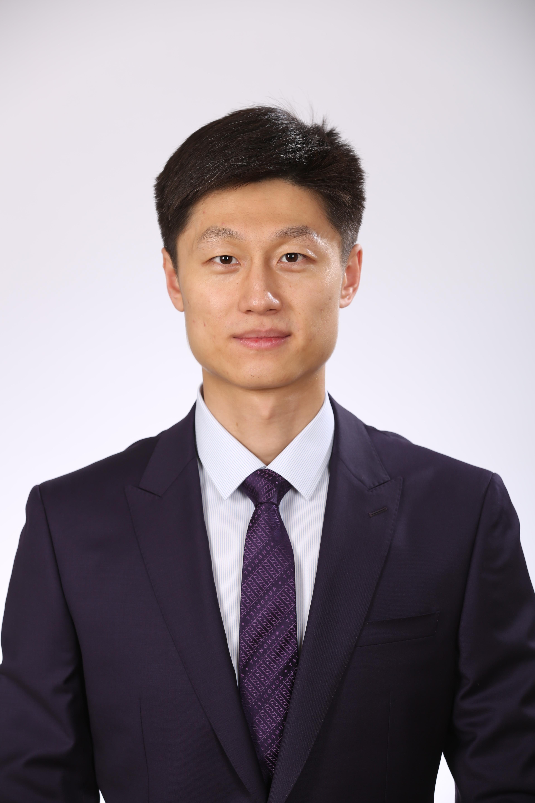

图大模型能力
把客户、供应商、物料、产线、库存、订单等经营对象组织为关系网络，支撑跨流程、跨部门的复杂问题理解。
OptiMax AI 构建企业经营私域世界模型，将图大模型、Agent 协同与运筹优化结合起来，让 AI 不止回答问题，还能理解企业约束并生成可执行决策。
把客户、供应商、物料、产线、库存、订单等经营对象组织为关系网络，支撑跨流程、跨部门的复杂问题理解。
把大模型的语义理解与运筹优化的约束求解结合，用算法处理排产、计划、库存、补货、路径等经营问题。
围绕经营任务编排分析、检索、建模、求解、校验等角色，让复杂工作流可以被管控、复核和持续迭代。
面向核心数据、权限边界和生产连续性，强调私有化部署、业务数据隔离、过程审计与可控输出。
产品以 OptiONE 企业级 Agent 协同管控底座为核心，
向 RiskOps、FactoryOps 与 FDE 交付体系持续沉淀。
RiskOps
对供应商、合同、物流、库存和外部事件进行识别、诊断、影响评估与处置建议。
FactoryOps
围绕主计划、产能约束、物料齐套、设备资源和交付周期，形成排程与动态调整能力。
FDE
把客户现场问题拆解为数据接入、知识建模、模型配置、业务校验和场景上线流程。
POC
从项目验证走向模块化复用，让产品能力在风险、计划、排产、采购、库存等场景持续扩展。
应用场景展示技术如何进入经营闭环：看见变化、建模求解、给出方案、回到执行。
顶尖学者与行业精英的强强联合

FOUNDING CHAIR
BEng, ME, MS, PhD, FINFORMS, FPOMS, FHKEng
申作军教授是中国工程院外籍院士，曾任香港大学副校长（研究），现为香港大学校长高级顾问、工程学院及经济及工商管理学院双聘讲座教授、研究生院院长。他是同心基金数据科学研究院创始院长。
申教授于2000年在美国西北大学取得博士学位，同年加入佛罗里达大学任助理教授，2004年加入加州大学伯克利分校，后晋升为校长教授及工业工程及运筹学系系主任。申教授于 2013 年加入清华大学并任特聘教授，曾任清华-伯克利深圳学院中心主任及清华大学名誉教授。申教授于2021年加入港大，担任香港大学副校长（研究），并于 2025 年获评中国工程院外籍院士。
申教授的主要研究领域为物流及供应链管理、数据驱动决策、复杂系统优化、人工智能与运筹优化协同（AI + OR）。他是美国运筹学及管理科学研究协会(INFORMS)院士、美国生产与运作管理学会(POMS)院士及前主席、香港工程科学院院士。



我们正在寻找不甘平庸、渴望用技术创造真实价值的同行者。
企业智能模型的核心建造者。需要构建精准模型，理解真实产业流程，将业务问题转化为可验证的数学与工程问题。
企业效率引擎的核心建造者。运用严谨的优化理论与启发式算法，将复杂业务规则转化为清晰模型，支撑经营效率提升。
支撑 AI 应用与数据服务的工程基座建造者，负责让模型、数据、业务系统稳定协同。
连接前沿 AI 研究与企业级可靠应用的核心桥梁，构建、优化并交付稳定高效的大模型智能系统。
技术价值与客户业务成功之间的总设计师。深入制造业等复杂业务场景，定义能够为客户创造真实价值的 AI 产品。
连接客户现场与产品研发的交付工程师。理解业务流程、配置 AI 方案、推动 POC 落地，并把真实反馈带回产品迭代。